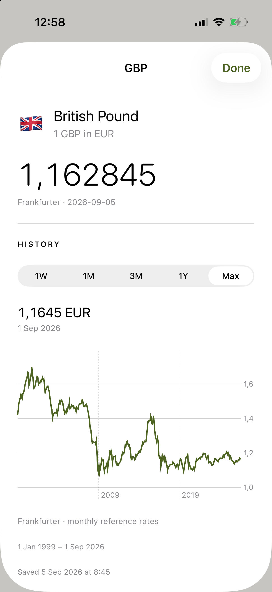
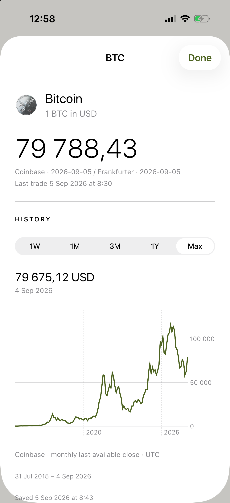
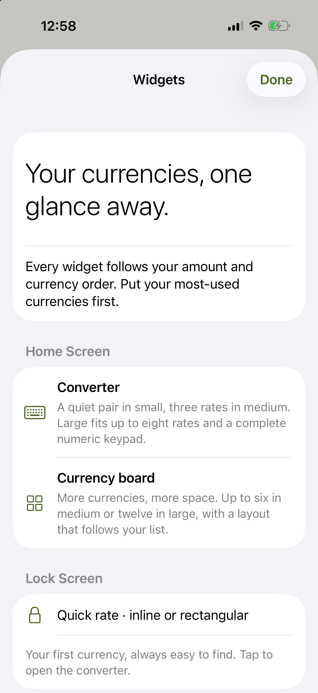
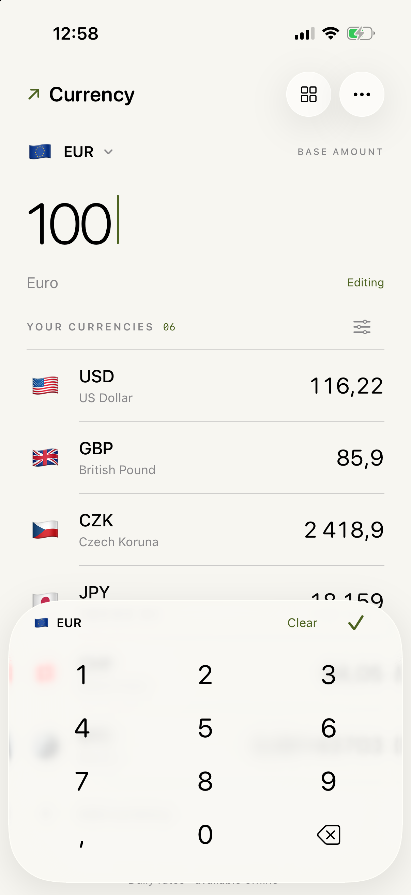
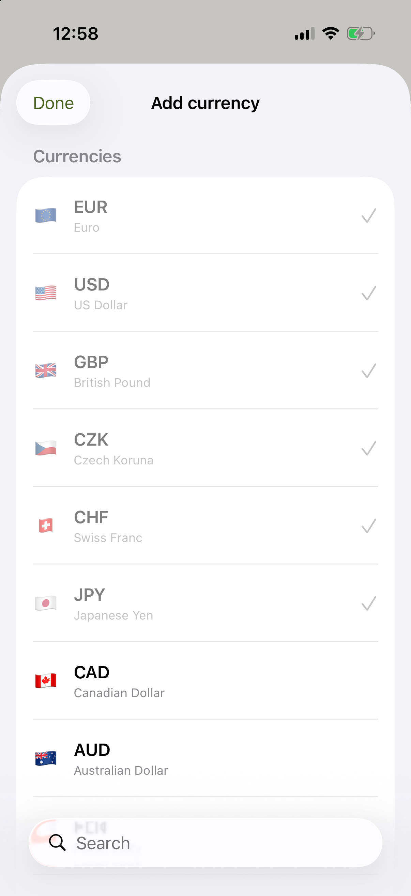
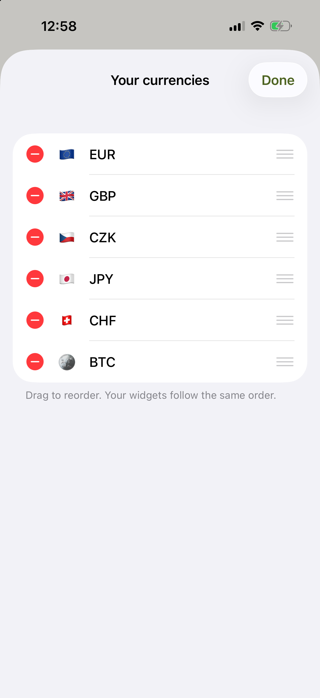
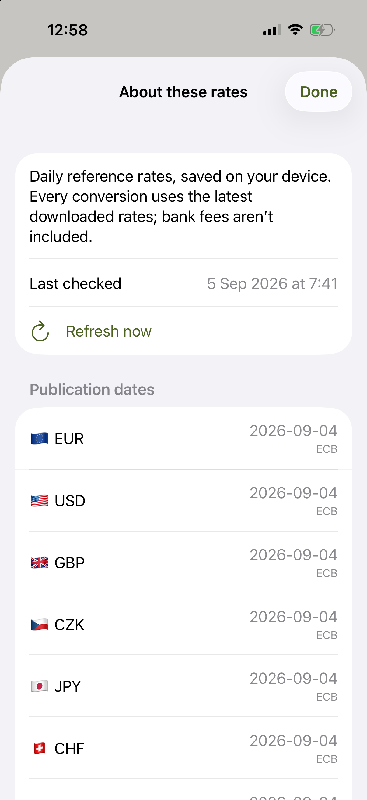

A closer look.
The current app, captured on an iPhone 17 Pro simulator running iOS 26.5. Select any preview to open its full-resolution screenshot.
Actual WidgetKit renders, framed to show the widgets. Full captures include the simulator home screen. iOS controls widget interaction and refresh timing.
02 / Inside the app

Fiat history1W, 1M, 3M, 1Y and Max. Full available history grouped monthly.

Crypto historyCoinbase history in USD, including 1Y and Max. Saved offline.

Widgets firstConverter, currency board, and Lock Screen quick rates.

Enter an amountA single glass surface above your list.

Add a currencyFlag emoji, currency names, and native search.

Make it yoursReorder or remove currencies. Widgets follow.

Know your ratesPublication dates, providers, and offline status.